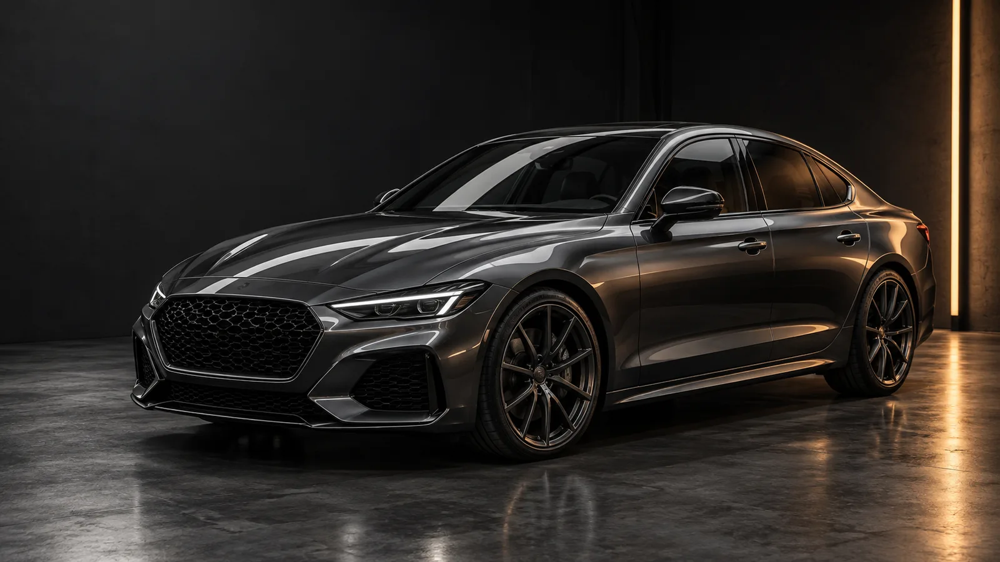
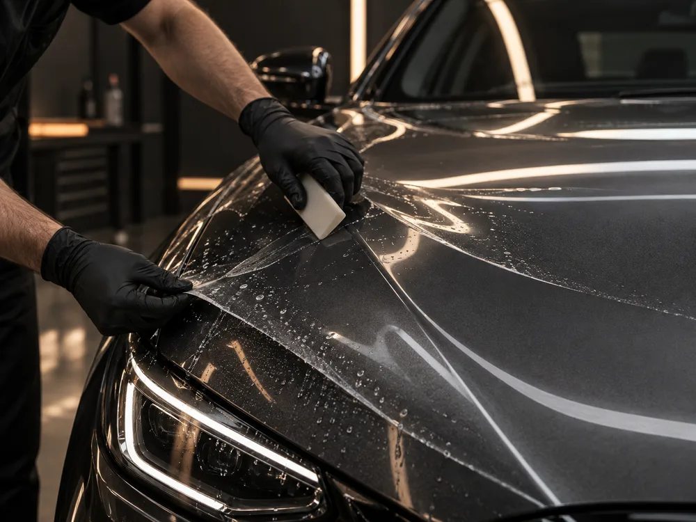
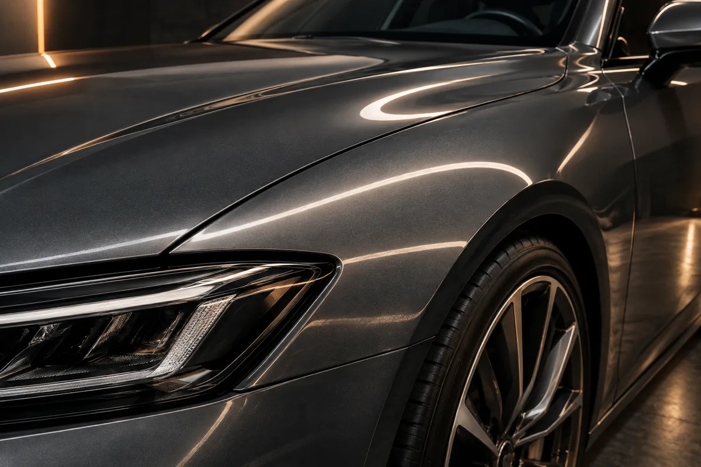

Paint Protection Film
Transparante folie als fysieke buffer op de delen die het meest te verduren krijgen.
Ontdek jouw dekking
PAINT PROTECTION / DETAILING STUDIO
Van je dagelijkse kilometers tot je mooiste omweg.
Doordachte lakbescherming. Verzorgd tot in detail.
01 / ONZE EXPERTISE
Een verzorgde auto begint bij de lak. Van grondige reiniging tot een beschermende laag: we stemmen de aanpak af op de auto én het gebruik. Helder uitgelegd, zorgvuldig uitgevoerd.
Transparante folie als fysieke buffer op de delen die het meest te verduren krijgen.
Ontdek jouw dekkingEen verzorgende beschermlaag, met aandacht voor glans en eenvoudiger onderhoud.
Bekijk jouw coatingGrondige reiniging en passende lakcorrectie voor een verzorgde, heldere uitstraling.
Verfijn de afwerkingAandacht voor bekleding, contactpunten en materialen. Een frisse basis, ook vanbinnen.
Kies complete verzorging
EEN ONZICHTBARE EXTRA LAAG
Een steentje, een snelwegrit, dagelijks gebruik. PPF voegt bescherming toe zonder de uitstraling van je auto over te nemen.
Gerichte frontdekking of een uitgebreider pakket? Dat begint bij hoe jij rijdt, niet bij de duurste optie.
Vind jouw beschermingsplan02 / HET VERSCHIL ZIT IN HET DETAIL
Verschuif de lijn en ontdek de glansimpressie.
Een visuele simulatie, geen echt voor-naresultaat.

GEDEMPT / SIMULATIEGLANS / SIMULATIE03 / GEEN STAPPEN OVERSLAAN
Lakstaat, gebruik en verwachtingen samen in kaart.
Een schone ondergrond voor de juiste vervolgstap.
Passende correctie, folie of coating. Geen overbodige behandeling.
De afwerking nalopen en onderhoud begrijpelijk uitleggen.
04 / JOUW AUTO. JOUW BESCHERMINGSPLAN.
Drie keuzes. Een helder vertrekpunt.
Geen persoonsgegevens nodig.
Demoadvies. De echte aanpak begint altijd met een inspectie.
Indicatieve demoprijzen. Voertuigformaat, lakstaat, materiaal, werkuren en dekking bepalen de echte offerte.
05 / STUDIO NOTES
Een compacte indruk van de AVREN-stijl.
Alle beelden zijn AI-sfeerimpressies.
GOED GEÏNFORMEERD BEGINNEN
PPF is een transparante folie die een fysieke beschermlaag vormt. Een keramische coating is een dunne laag gericht op oppervlakte-eigenschappen en onderhoudsgemak. Een coating vervangt geen steenslagfolie. Geen van beide maakt lak onkwetsbaar.
Dat verschilt per materiaal, toepassing, gebruik en onderhoud. Een echte specialist bespreekt productspecificaties en eventuele garantievoorwaarden vooraf. Deze demo belooft geen vaste levensduur.
Volg het advies dat bij de gekozen folie of coating hoort. Was zorgvuldig en gebruik geschikte middelen. De juiste eerste wasbeurt en onderhoudsproducten bespreek je bij de overdracht.
De configurator geeft een indicatieve demoraming. Voorbereiding, lakcorrectie en gekozen dekking beïnvloeden de planning. Een echte afspraak wordt pas bevestigd na afstemming.
Nee. AVREN is een fictieve portfolio-demo van LK Webdesign. Prijzen, planning en adviezen zijn illustratief. Er wordt niets verstuurd en er wordt geen afspraak gemaakt.
VOLGENDE STAP